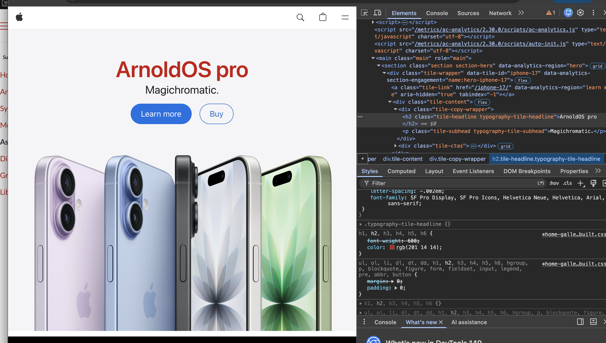

My Dev Tools Vandalism
I used browser developer tools to temporarily "vandalize" a website. Below is a screenshot showing my changes. These edits only appeared on my computer and did not affect the actual website.

What I "Vandalized"
Describe the changes you made to the website using the browser's developer tools. Some potential questions to consider:
Week 04 Exercise 01: Dev Tools Vandalism
For this exercise, I used browser developer tools to temporarily edit the Apple homepage. I changed the main headline text and adjusted the CSS styling so the page had a different color, font size, and overall appearance.
These edits were local-only, meaning they only appeared on my computer and did not change the real website.